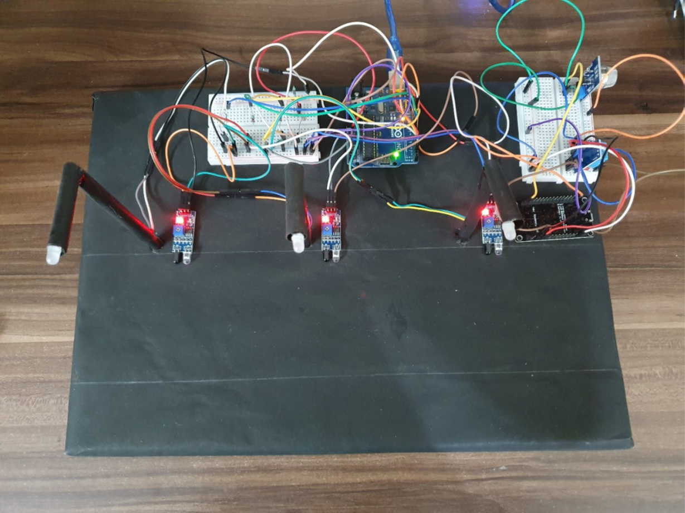
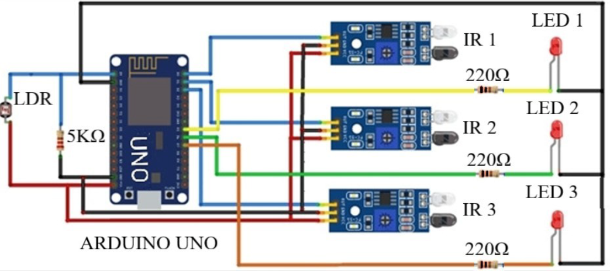
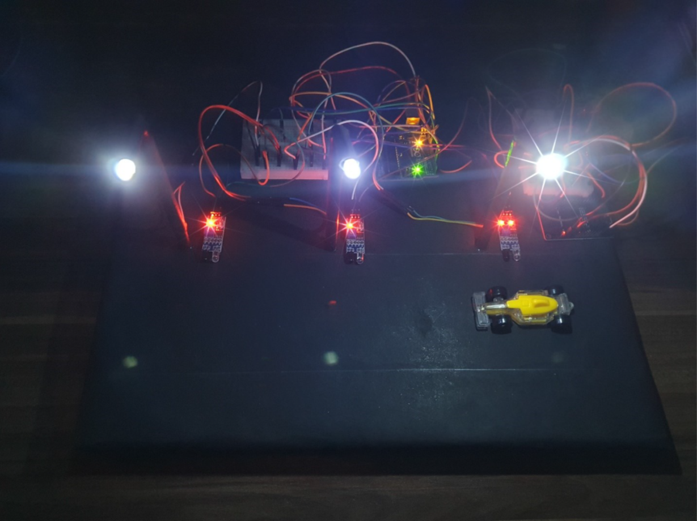
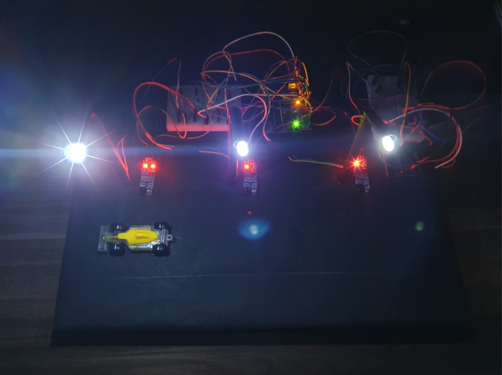
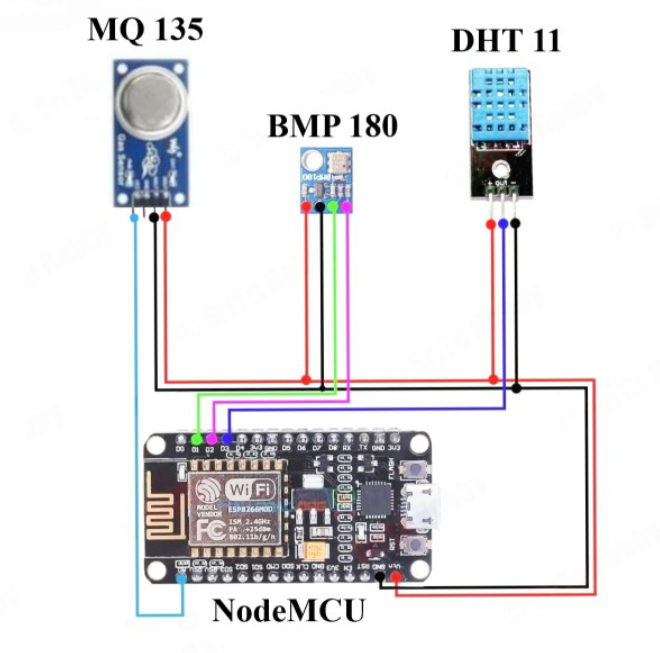
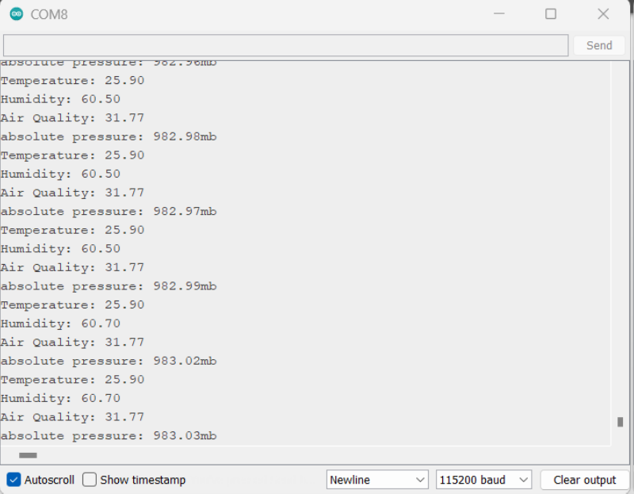
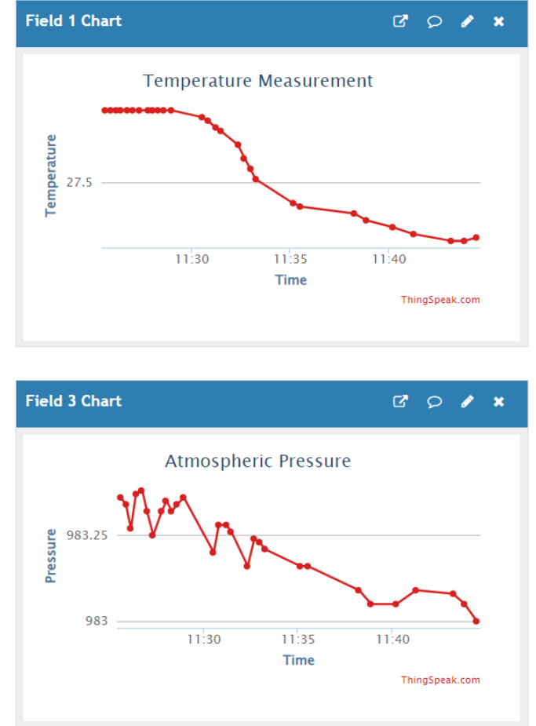
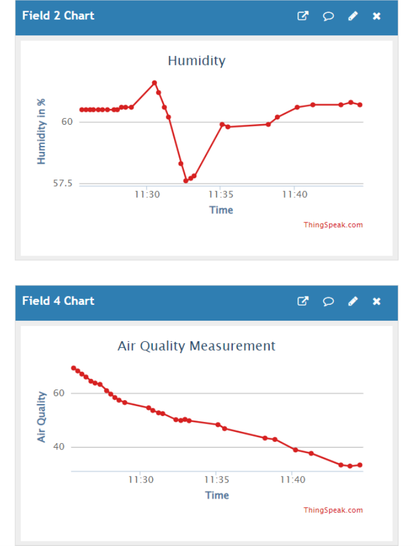

Smart City Automation Using Embedded and IoT Technologies
Integrating Smart Lighting, Traffic Prioritization, and Environmental Monitoring
Introduction
Urban areas require intelligent infrastructure that adapts to dynamic environmental and traffic conditions. This Smart City prototype demonstrates the integration of three essential modules— street lighting, RFID-based traffic control and IoT-enabled environmental monitoring—to enhance energy efficiency, public safety, and data-driven decision-making.
The system leverages Arduino-based embedded control, sensor networks and Wi-Fi cloud communication to model a scalable, low-cost urban solution.
Project Objective
- Implement smart automation for energy-saving street lighting.
- Design an intelligent traffic signal system responsive to emergency vehicles.
- Integrate real-time air quality and temperature sensing with cloud data logging.
- Develop a consolidated prototype demonstrating modular urban services.
System Architecture
The prototype is structured into three hardware subsystems controlled via a central Arduino Uno and integrated with an ESP8266 Wi-Fi module for cloud-based data visualization.
Each subsystem operates independently while communicating through a common control unit. The system also incorporates RFID readers, IR sensors, gas and temperature sensors, and LED indicators.

Suggested Figure: Final Prototype Layout
Module 1: Smart Street Lighting
This module automates streetlight operation using:
-
LDR Sensor :Detects ambient light to switch lights off during daytime.
-
IR Motion Sensors:Detect moving vehicles; nearby lights switch from 30% to 100% brightness.
Brightness control is achieved via PWM output from Arduino, allowing smooth transitions.

Suggested Figure: Streetlight Control Circuit
Highlights:
- Reduces unnecessary power usage during idle hours.
- Reacts dynamically to traffic movement.
Module 2: Traffic Signal with Emergency Vehicle Clearance
The traffic light module responds to both general traffic and tagged emergency vehicles using:
-
IR Sensors :Detect the presence of vehicles in each lane.
-
RFID Reader :Identifies emergency vehicles based on pre-coded tags.
When an emergency vehicle is detected, normal signal sequencing is overridden to grant immediate green passage.


Suggested Figure: Traffic Control Circuit with RFID Logic
Highlights:
- Reduces response times for emergency services.
- Prevents collisions via adaptive signaling.
Module 3: Environmental Monitoring and IoT Integration
Environmental parameters are monitored using:
-
MQ-135 Gas Sensor :Measures air quality (CO₂, NH₃, etc.).
-
LM35 Temperature Sensor :Tracks ambient temperature.
Data is transmitted via the ESP8266 module to the ThingSpeak cloud, where it's displayed in real-time dashboards.


Suggested Figure: Environmental Sensing Circuit


Suggested Figure: ThingSpeak Cloud Output
Highlights:
- Supports predictive pollution control.
- Enables remote environmental tracking
Prototype Development
The system was built on a scaled-down physical model of a city intersection, including:
- Roadways with streetlights.
- Traffic poles with red-yellow-green LEDs.
- Simulated emergency vehicle units with RFID tags.
All modules were tested in isolation and as part of the full integrated setup.
Testing & Results
Environmental parameters are monitored using:
-
Lighting Module :Accurately adjusted brightness based on time of day and motion.
-
Traffic Module :Detected RFID signals with minimal latency and updated signals correctly.
-
IoT Module :Streamed sensor data to ThingSpeak without packet loss or delay.
Conclusion
This Smart City prototype successfully demonstrates how embedded systems and IoT can be combined to deliver responsive, real-time urban automation. Each module is independently operable and can be expanded to larger deployments.
Future Scope
-
Solar Panel IntegrationFor powering remote units
-
GSM AlertsFor pollution or temperature threshold breaches
-
AI-based Traffic PredictionDynamic rerouting
-
Integration with Civic InfrastructureSuch as smart bins and parking